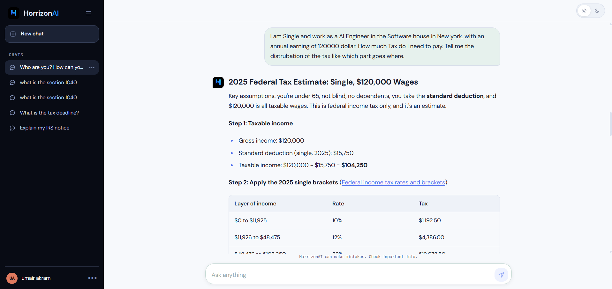

IRS Tax Chatbot
A question-answering system over U.S. IRS information. Ask about forms, deadlines or your own tax situation and get grounded, step-by-step answers with source links.

Overview
The IRS Tax Chatbot answers questions about U.S. Internal Revenue Service information using retrieval-augmented generation. Instead of relying on what a model remembers, it retrieves the relevant IRS source material first and generates an answer from it.
In the example shown, a user describes their situation and income and the assistant works through the federal tax estimate step by step, with assumptions stated, a bracket table, and a link to the IRS source.
My contributions
- Collected, processed and indexed approximately 18,000 unique English IRS web pages into a vector database for semantic retrieval.
- Implemented the retrieval and question-answering pipeline using FastAPI and PydanticAI.
- Integrated an LLM-based agent that retrieves relevant source information and generates grounded responses.
- Built and delivered the whole product end-to-end, from data collection to the live chat interface.
Achievements
- Indexed ~18,000 unique IRS pages for semantic search.
- Live at irs.horrizonai.com with saved conversation history.
- Answers show their working: stated assumptions, calculation steps, tables, and links back to the IRS source.
- Shipped with a visible reminder that the assistant can make mistakes and important information should be checked.
Top things to know
Grounded answers
Responses are generated from retrieved IRS content and point back to the source page.
Step-by-step calculations
Multi-step questions such as a federal tax estimate are broken into taxable income, brackets and totals.
Readable output
Headings, bullet lists and tables rendered cleanly inside the chat.
Conversation history
A chat sidebar keeps previous questions available to reopen.
Light and dark themes
Both themes are supported, as the screenshots on this page show.
How a question is answered
- 1Collect IRS pages
- 2Clean and de-duplicate
- 3Index in vector database
- 4Semantic retrieval
- 5Agent drafts answer
- 6Reply with sources